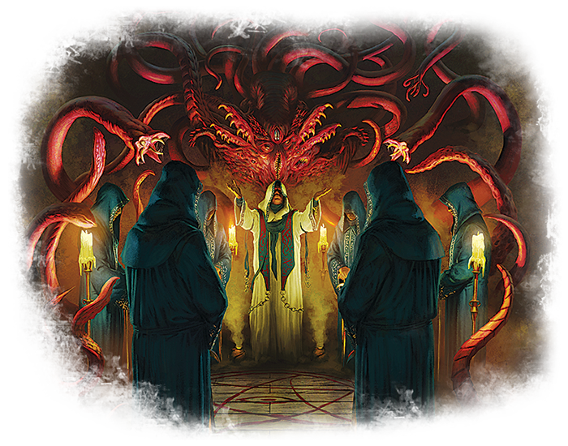

Os sistemas de RPG são conjuntos de regras e estruturas que orientam a dinâmica de jogos de interpretação de papéis. Esses sistemas oferecem regras que definem como as interações e eventos ocorrem no universo do jogo. Isso inclui mecânicas para resolver desafios, determinar o sucesso ou fracasso de ações dos personagens, e até mesmo evoluir as habilidades dessas figuras fictícias ao longo da narrativa. Os sistemas de RPG fornecem uma base sólida que equilibra a liberdade narrativa com a necessidade de uma estrutura consistente, oferecendo aos jogadores as ferramentas necessárias para dar vida às suas histórias imaginativas.
Dungeons & Dragons (D&D) é um renomado sistema de RPG que mergulha os participantes em mundos de fantasia. Criado por Gary Gygax e Dave Arneson, D&D utiliza dados poliédricos para determinar os resultados das ações dos jogadores, desde ataques até testes de habilidade. Os jogadores assumem papéis de personagens variados, como magos, guerreiros e elfos, enquanto o Mestre do Jogo (Dungeon Master) guia a narrativa e apresenta desafios. O sistema é conhecido por sua flexibilidade e permite a expansão e personalização dos mundos de jogo, resultando em experiências únicas e épicas para os participantes.
O coração do Dungeons & Dragons reside em sua capacidade de fomentar a criatividade e a colaboração. Os jogadores desenvolvem suas histórias à medida que enfrentam monstros, exploram masmorras e desvendam tramas épicas. A progressão dos personagens é fundamental, com o acúmulo de experiência e a conquista de novas habilidades proporcionando um senso gratificante de evolução. D&D transcende o jogo para se tornar uma comunidade global, conectando jogadores em aventuras compartilhadas que se desdobram por meio da imaginação coletiva.
Call of Cthulhu é um sistema de RPG notável que mergulha os jogadores no universo de horror cósmico criado pelo autor H.P. Lovecraft. Desenvolvido pela Chaosium, o jogo é ambientado em cenários sombrios e repletos de mistério, onde os participantes assumem o papel de investigadores confrontando horrores sobrenaturais. A mecânica única de jogo, baseada no sistema de Percentis, enfatiza o realismo e a vulnerabilidade dos personagens, enquanto o foco narrativo recai sobre a descoberta gradual de conhecimentos proibidos que desafiam a sanidade humana.
Em Call of Cthulhu, a essência do terror está na inevitabilidade do desconhecido e na fragilidade do ser humano diante das forças cósmicas. Os jogadores se envolvem em tramas intricadas que exploram o lado mais sombrio da existência, enfrentando cultos arcanos, entidades insondáveis e investigando mistérios que ultrapassam os limites da compreensão humana. Este sistema de RPG destaca-se por sua atmosfera densa, enfatizando o horror psicológico e a narrativa imersiva, proporcionando aos jogadores uma experiência única e assombrosa.
Além dos renomados Dungeons & Dragons e Call of Cthulhu, o universo dos RPGs de mesa é vasto e diversificado, oferecendo uma gama extensa de sistemas que atendem a diversos gostos e estilos de jogo. Por exemplo, o sistema GURPS destaca-se pela sua adaptabilidade a qualquer cenário, enquanto o Fate privilegia a narrativa colaborativa e a flexibilidade. O Shadowrun combina elementos de ficção científica e fantasia urbana, enquanto o Powered by the Apocalypse oferece uma estrutura única para criar narrativas dinâmicas. Essa variedade reflete a riqueza do hobby, proporcionando aos jogadores a liberdade de escolher sistemas que se alinhem com suas preferências de jogo específicas.